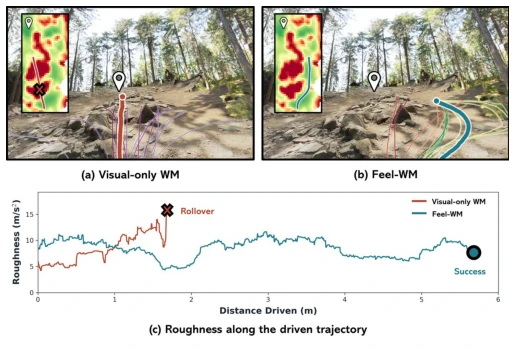
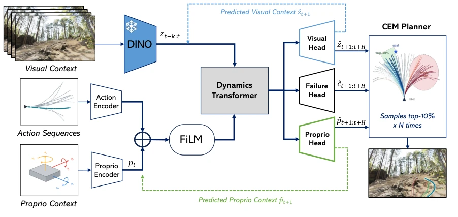
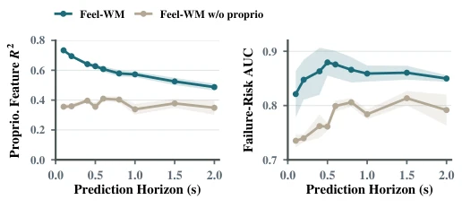
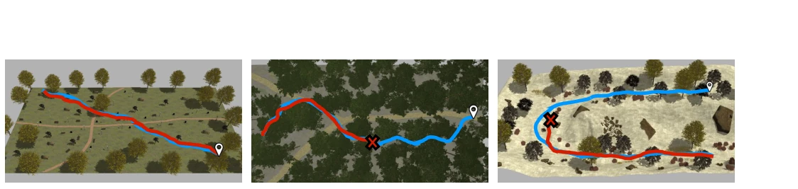
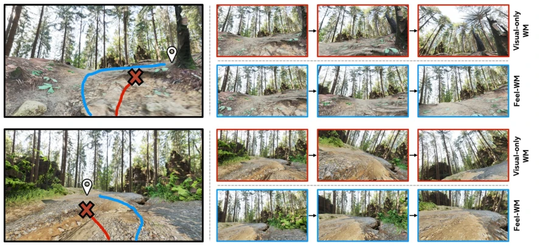

This paper forcibly equips "look-ahead" robots with "proprioception". Existing navigation world models (such as NWM [4]) rely too heavily on vision, assuming that seeing flat ground implies traversability, resulting in frequent rollovers in the wild. Feel-WM forcibly injects IMU and encoder data into the model to predict how the robot "feels". This approach indeed works, reducing the rollover rate in the wild. However, do not celebrate too soon; it still relies on training with large amounts of recorded data, and generalization to new terrains may not succeed. Moreover, to deploy onboard, tokens must be compressed; does this constitute sacrificing accuracy for efficiency? Additionally, it relies on proprioception labels from specific datasets; what if sensor noise is high? In short, it is a pragmatic improvement, but still far from a general world model.
In the wild, relying solely on cameras is insufficient. Vision can only see the terrain, not the interaction between the robot and the terrain (slip, tilt). Existing NWM such as [4] predicts future vision but ignores physical dynamics. Like [8], although it uses a dynamics model, it does not combine with a visual world model. [11] predicts terrain maps but does not predict robot states. We need a model that can both see and "feel" to avoid rollovers. Especially in off-road scenarios, speed and posture have a huge impact on passability; pure visual prediction cannot capture these physical feedbacks. Existing end-to-end policies [2] directly map actions, lacking physical reasoning about the future; once encountering unknown terrain, they easily lose control. Therefore, introducing proprioception as a condition to predict the physical future is key to solving off-road navigation safety.

Fig. 1: Same start, goal and terrain, two futures. (a) The visual-only world model drives across the rock field; (b) Feel- WM goes around. Thin lines denote the candidates and the thick line the driven trajectory, which the insets place on a roughness map; × marks the rollover. (c) Roughness along each driven trajectory.
The overall process is divided into three steps. First, vision uses frozen DINOv2 to extract patch tokens, maintaining feature space computation. Second, proprioception uses a 1D CNN to process IMU/encoder data, injecting it into visual tokens via FiLM, allowing visual features to perceive robot states. The core is the Dynamics Transformer, which predicts the future based on current state and actions. Outputs three heads: visual features, proprioception features (vibration, slip, etc.), failure risk. During training, these three losses are jointly optimized, using scheduled sampling to simulate autoregressive prediction during planning. During planning, CEM samples action sequences, using Score = Goal Similarity - Risk to select actions. This way, it looks at the goal while avoiding pitfalls. Additionally, for onboard deployment, Perceiver Resampler is used to compress tokens, balancing accuracy and speed.

Fig. 2: Overview of Feel-WM. FiLM injects the action and the current proprioceptive state into the frozen DINOv2 patch tokens, and the dynamics transformer predicts the next visual tokens, a failure risk and the next proprioceptive state. Dashed: the predictions that re-enter at the next step.
Used the TartanDrive dataset for offline evaluation, Gazebo and Isaac Sim for closed-loop simulation, and a real Husky robot. Baselines include NWM [4], RAE-NWM [6], and NoMaD [2]. Metrics include success rate, trajectory error, and bumpiness. In results, Feel-WM has a significantly higher success rate on rough terrain, e.g., Gazebo forest route increased from 54% to 84%. Real-world deployment also outperforms NoMaD. Ablation experiments prove that proprioception input and the risk head are both useful. In zero-shot transfer tests on Isaac Sim, Feel-WM also maintained an advantage, indicating that generalization is acceptable.

Fig. 3: Predicting the physical future with and without proprioceptive input. TartanDrive 2 validation, three seeds, mean ± std. Left: R2 of the predicted proprioceptive features. Right: failure-risk AUC.

Fig. 4: Qualitative comparison in Gazebo. Pins and × denote the goal and rollover. Trajectories are color-coded as visual-only model (red) and Feel-WM (blue).

Fig. 5: Qualitative comparison in Isaac Sim. Left: trajectories color-coded as visual-only model (red) and Feel-WM (blue); the pin denotes the goal, and × marks the rollover (top) and the body disturbance on exit (bottom). Right: frames along each episode.